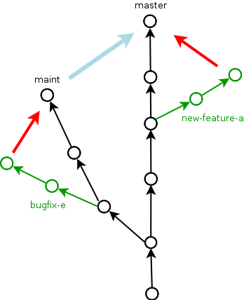

Git Workflow¶
This page describes the Git collaboration workflow that we try to follow in our development.
Introduction¶
Our collaboration model is basically a pull-on-demand model similar to the one used for the Linux kernel. You may want to read a chapter on this collaboration model in the Mercurial book.
In the recipes below you will encounter several personas with different roles:
- Joe Bloggs, head developer and system integrator
- John Doe, developer, maintainer of the WebFoo module
- Erika Mustermann, developer, maintainer of the WebBar module
Setting things up¶
S1. Setting up your Git identity¶
How to set up your Git identity.
$ vim ~/.gitconfig
$ cat ~/.gitconfig
[alias]
k = log --graph --decorate --pretty=oneline --abbrev-commit
[user]
email = john.doe@cern.ch
name = John Doe
[color]
ui = auto
Please use the same full name and email address that was used in the good old CVS !ChangeLog, so that the repo history looks nicely coherent over time.
S2. Setting up your private repo¶
This is how to set up your private repo (on your laptop).
$ cd ~/src
$ git clone http://invenio-software.org/repo/invenio.git
S3. Backuping your private repo (only developers at CERN)¶
This is how to mirror your private repo to the CERN AFS space.
$ rsync -rlptDvz -e ssh --delete ~/src/invenio/ \
johndoe@lxplus.cern.ch:private/src/invenio
You should mirror your private repo and your working files from your laptop to your private AFS space every night or so. This will give you a safety of having AFS backups around should something bad happen to your laptop. This is important, because you may have some features existing only in your personal repo for weeks or months (see below).
Also, having a mirror of your private repo on AFS will provide you with an easy way of testing your private uncommitted code on various other machines, notably CDSDEV.
S4. Setting up your public repo¶
This is how to set up your public repo (on your AFS public space).
$ ssh johndoe@lxplus.cern.ch # LXPLUS (SLC5) now has git
johndoe@lxplus> mkdir /afs/cern.ch/user/j/johndoe/public/repo
johndoe@lxplus> cd /afs/cern.ch/user/j/johndoe/public/repo
johndoe@lxplus> mkdir invenio-johndoe.git
johndoe@lxplus> cd invenio-johndoe.git
johndoe@lxplus> git --bare init
johndoe@lxplus> chmod a+rx hooks/post-update
johndoe@lxplus> echo "John Doe's personal tree." > description
You can now push your private master branch (from your laptop) to your public repo (on AFS).
$ cd ~/src/invenio
$ git push ssh://johndoe@lxplus.cern.ch/~/public/repo/invenio-johndoe.git master
You can define a shortcut called johndoe-public for your public repo
in order to ease future push commands.
$ git remote add johndoe-public \
ssh://johndoe@lxplus.cern.ch/~/public/repo/invenio-johndoe.git
$ git push johndoe-public master
S5. Pushing to your public repo from outside CERN¶
In order to be able to push to your public repo from outside of CERN to a specific machine such as cdswaredev that has ssh port hidden behind the firewall, you should configure your ssh client to connect to cdswaredev via lxplus proxy gateway, using netcat to forward traffic to cdswaredev.
$ cat ~/.ssh/config
Host lxplus.cern.ch
ProxyCommand ssh lxplus.cern.ch exec /usr/bin/nc %h %p
This will enable you to have apparently direct ssh/scp/git command connection from your laptop to cdsware, as if you were inside CERN.
Note that this is not needed for regular branch pushing, since LXPLUS now has git. It is only needed to access git repos on specific machines, which is rarely the typical developer use case.
S6. Making your public repo visible on the Web¶
Please contact Joe Bloggs in order to make your public repo visible on Invenio’s repo web interface.
S7. Using remote repository locally¶
If you prefer, you can mount the remote afs filesystem in the local drive, and work as normal. To accomplish that you need sshfs package installed.
$ mkdir ~/afsrepo
$ sshfs -o workaround=rename <username>@lxplus.cern.ch:/afs/cern.ch/user/r/<username>/public/repo \
~/afsrepo/
$ git push ~/afsrepo/invenio.git/ master
To unmount the repository.
fusermount -u ~/afsrepo
You can create aliases or edit /etc/fstab to help you mount the public repository.
sshfs#<USERNAME>@lxplus.cern.ch:/afs/cern.ch/user/<LETTER>/<USERNAME>/public/repo fuse user,noauto 0 0
Understanding official repo branches¶
The official Invenio repository contains several branches for maintenance and development purposes. We roughly follow the usual git model as described in man 7 gitworkflows and elsewhere.
In summary, the new patchlevel releases (X.Y.Z) happen from the
maint branch, the new minor feature releases (X.Y) happen from the
master branch, and new major feature releases (X) happen after they
mature in the next branch. A more detailed description follows.
maint¶
This is the maintenance branch for the latest stable release. There
can be several maintenance branches for every release series
(maint-0.99, maint-1.0, maint-1.1), but typically we use only
maint for the latest stable release.
The code that goes to the maintenance branch is of bugfix nature
only. It should not alter DB table schema, Invenio config file
schema, local configurations in the etc folder or template function
parameters in a backward-incompatible way. If it contains any new
features, then they are switched off in order to be fully compatible
with the previous releases in this series. Therefore, for
installations using any Invenio released X.Y series, it should be
always safe to upgrade the system at any moment in time by (1) backing
up their etc folder containing local configuration, (2) installing
the corresponding maint-X.Y branch updates, and (3) rolling back the
etc folder with their customizations. This upgrade process will be
automatized in the future via special inveniomanage options.
master¶
The master branch is where the new features are being developed and
where the new feature releases are being made from. The code in
master is reviewed and verified, so that it should be possible to
make a new release out of this branch almost at any given point in
time. However, Invenio installations that would like to track this
branch should be aware that DB table definitions are not frozen and
may change, the config is not frozen and may change, etc, until the
release time. So while master is relatively stable for usage, it
should be treated with extreme care, because updates between day D1
and day D2 may require DB schema and etc configuration changes that
are not covered by usual inveniomanage update statements, so people
should be prepared to study the differences and update DB schemata and
config files themselves.
next¶
If a new feature is well implemented, tested and considered stable, it
goes directly into the master branch described previously. If it is
cleaned, tested and almost stable, but not fully master worthy yet,
then it may go to the next branch. The next branch serves as a
kind of stabilization branch for master. The features may stay in
next for a long enough time to get stabilized, and when they
are ready, they are promoted to master (or to maint in some
scenarios). The code in next may have bugs, may not pass the test
suite, but anyway should be stable enough so that it is almost never
revoked/rebased.
Usually, master contains all of maint, and next contains all of
master. This is assured by periodical upward merges
(maint-to-master, master-to-next, etc).
Working on new features - overview¶
Here is a schema summarizing how John Doe would work on new features and fixes and how Joe Bloggs would integrate them.
{kind=link}
The most important thing to recall is that any topic branch, be it a bugfix or a new feature, should be started off by the developer from the lowest maint branch it applies to, since it will then be merged upwards to all the other branches as part of the integration process.
{kind=link}
Example: if there is an important bug in v0.99.1 that John is going to
fix, then John should create a topic branch from the tip of
maint-0.99, test and everything, and send it over for integration,
and it will then get merged both to maint-0.99 as well as to all the
necessary upwards branches (maint-1.0, maint-1.1, master, etc),
as needed, e.g. via periodical maint->master merges.
Backporting fixes from master to maint should remain exceptional.
Working on new features - details¶
W1. Cloning the repo¶
After you clone the official repo (see S2 above), you keep working on your laptop in your own private git repo, using Atlantis Institute of Fictive Science setup conditions.
W2. Working with local topic branches¶
You never work on the master branch, you always checkout local topic branches for every feature you are implementing. This will permit you to switch between topics easily, implement some urgent fixes for older releases, publish some features while retaining features not yet ready for public eyes, etc.
In our workflow example above we created several branches to tackle several different tasks.
$ git checkout master
$ git branch new-feature-a
$ git branch new-feature-b
$ git branch refactor-c
$ git checkout next
$ git branch wild-idea-d
$ git checkout maint
$ git branch bugfix-e
The topical branches do not necessarily have to stem from the same point in the master branch.
Please name your topical branches sensibly, since their names may appear in the central repo logs in case of non-trivial merges. (Please use a dash rather than an underscore in topical branch names.)
W3. Working on new-feature-b¶
You now have some time to work on feature B, so.
$ git checkout new-feature-b
[ edit, test, edit, test, commit ]
[ edit, test, edit, test, commit ]
[ more of the same ]
until things work as they should for the Atlantis Institute of Fictive Science demo site. This can take a minute or a few weeks, depending on the complexity of B.
While working on B, you can switch to other branches to work on various more urgent problems, etc.
W4. Using temporary stash¶
If you want to switch branches, you have to commit all the stuff you are currently editing, which may not be what you want. In that case you can stash your commits into a temporary git stash, switch to a branch, do what you want, and when you come back, replay the changes from the stash. Here is an example.
$ git stash # put local edits to the stash
$ git stash list # list what you have there
stash@`informe 0 <report/0>`_: WIP on foo.py: 2340b5a... WebFoo: new support for baz
$ git checkout refactor-c # work on the refactor-c branch a bit
... <...>
$ git checkout new-feature-b # come back to the new-feature-b branch
$ git stash apply # replay stuff from stash
$ git diff # verify
W5. Testing on DEV servers¶
When your new-feature-b code works okay on the demo site, and you synced it to your /private/ AFS space, you should now test it under CDSDEV or INSPIREDEV operating conditions. Some more editing, testing, and committing may be needed if things are not working as expected.
If the code is working properly on CDSDEV in itself, but say some scalability issues were encountered, then there are two options: (i) either some more of the editing/testing/committing cycle is needed, or (ii) the code is considered working fine enough to be merged now, while the performance issues are savannized to be solved later.
W6. Rebasing against latest git/master¶
At this step the new-feature-b code is working both for Atlantis and for CDS contexts. You should now check the official repo for any updates to catch any changes that may have been committed to origin/master in the meantime.
$ git checkout master
$ git pull
You can then rebase your new-feature-b branch against recent master.
$ git checkout new-feature-b
$ git rebase master
In case of conflicts during the rebase, say in file foo.py, you should resolve them.
$ vim foo.py
$ git add foo.py
$ git rebase --continue
or you can stop the rebase for good.
$ git rebase --abort
You may prefer rebasing of your local commits rather than merging, so that the project log looks nice. (No ugly empty merge commits, no unnecessary temporary versions.)
While rebasing, you may want to squash your commits together, to keep the git repo history clean. See section R4 below for more details.
You should test your code once more to verify that it was not broken by the updates.
W7. Publishing your work¶
W7.a Pushing into your public repo¶
The new-feature-b code is now ready to be pushed into your public repo for public consumption. Please make sure to check again that the test cases are working well, and please check once more the basic code kwalitee, as mentioned in the section R3 below.
If the test cases work and the code kwalitee is acceptable, push your branch into your public repo this way:
$ git push johndoe-public new-feature-b
Then alert Joe Bloggs with a request to review and integrate the
branch, indicating git branch johndoe/new-feature-b in the email
Subject header so that the emails will be threaded properly and given
special treatment in the haystack of Joe’s usual email conversation.
Please also add any special observations for merge. Example:
From: john.doe@cern.ch
To: joe.bloggs@cern.ch
Subject: git branch johndoe/new-feature-b
Hi Joe:
Please merge git branch johndoe/new-feature-b. Tests added,
kwalitee checked, needed quickly for Jane's forthcoming
new-feature-c.
Cheers, John Doe
W7.b Sending patches by email¶
If some occasional code contributors do not have a public repo, they can generate and send patches by email to Joe. Say like this.
$ git checkout master
$ git pull
$ git branch foo-fix
$ git checkout foo-fix
$ emacs bar.py
$ git commit -a -m 'WebFoo: fixed bad problem'
$ git format-patch master
$ ls -l 0001-WebFoo-fixed-bad-problem.patch
$ git send-email --to joe.bloggs@cern.ch 0001-WebFoo-fixed-bad-problem.patch
Or, instead of the last command, send Joe a normal verbose email with
attached 0001-WebFoo-fixed-bad-problem.patch file.
W7.c Sending patch-suggestions¶
As we said in the introduction, John usually maintains the !WebFoo module while Erika usually maintains the !WebBar module. What happens if Erika spots a problem some !WebFoo feature?
If the problem and its solution is clear, Erika can simply alert John that she’s up to it, fix the problem and publish a branch or send an email to Joe asking for integration.
If the problem a little bit more complicated or there are several possible solutions and it is not clear which one is the best or the solution to the problem requires some deep changes inside the structure of !WebFoo that may affect other things or the problem requires optimizations of several pre-existing functions, then it may be best if Erika contacts John as the !WebFoo module maintainer about the problem. Maybe John would like to do the changes himself or John can advise Erika how to go about the problem, etc.
In the latter case Erika can implement the proposed solution and send the patch-suggestion email to John as explained in W7.b. John can than review and approve the change and eventually change what has to be changed and forward the branch to Joe for integration.
Note that if such a change to !WebFoo may affect other modules and/or other APIs, then these have to be usually discussed/reviewed by Joe in advance, just like other intra-module vs inter-module issues.
W8. Review process¶
W8.a Reviewing and merging branches¶
Joe now starts to review and integrate the new-feature-b branch. This usually takes two rounds: 1) pure reading of the patch can generate some comments; after the round one is over, 2) testing the patch can generate other comments.
If the changes to be done are rather small, then Joe usually does it himself.
$ git log master..johndoe/new-feature-b # even when master is well ahead in future
$ git diff master...johndoe/new-feature-b
$ git merge --log johndoe/new-feature-b
$ git commit --amend # change log message
$ vim Makefile.am # edit to fix something
$ git add Makefile.am
$ git commit --amend -s # commit also this new change and sign-off
$ git push origin-writable master # push to public repo
If the changes to be done are rather important, and may reveal a necessity to make some more amendments to the code, this can eventually lead to longer edit/test/commit iterations done in your private repo. If this happens, then, since your code was already published into a public space (even though as personal only), you should not rebase anymore (since rebase rewrites history); you should only merge your new amendments. Or, in case of bigger rewrites, you can publish a new branch.
W8.b Reviewing and committing patches¶
For patches received by email, a similar review procedure takes place. To integrate such a patch.
$ less ~/0001-Foo.patch
$ emacs ~/0001-Foo.patch # for small edits
$ git am -3 ~/0001-Foo.patch
$ git commit --amend # to change commit message
or, for bigger patches that may require more integration work:
$ less ~/0001-Foo.patch
$ git am -3 ~/0001-Foo.patch
$ emacs foo.py # change what is needed
$ emacs bar.py # change what is needed
# test, install, etc
$ git add foo.py # add silently Joe's changes to original patch
$ git add bar.py # add silently Joe's changes to original patch
$ git commit --amend # commit everything in John's name
Although the last process may be evil at times, since Joe kind of usurps John’s name for the changes, and commits in his name. Hence this method is usually acceptable only for tiny commits (e.g. correcting typos).
W8.c Reviewing and cherry-picking commits¶
Instead of integrating branches in full, Joe may want to cherry-pick some particular commits or squash branches to keep the project history clean. An example:
$ # see log of a branch:
$ git log erika/cool-stuff
# pick one particular commit: (e.g. some other author in Erika's branch)
$ git cherry-pick 027e1524cd1b823a620620d4b60dd570596fd641
$ # edit its log message:
$ git commit --amend
$ # squash other commits together while merging: (e.g. other author in Erika's branch)
$ git diff 027e1524cd1b823a620620d4b60dd570596fd641 394d1a2a8488cbd0554f12b627ce478c8d1ee65c > ~/z.patch
$ git apply --check z.patch
$ git apply ~/z.patch --check # test whether patch applies
$ emacs ~/z.patch # edit some lines away, retest until applies
$ git apply --reject z.patch # alternatively, apply only good junks, study rejects later
$ # commit changes as Erika:
$ git commit -a --author='Erika Mustermann <erika.mustermann@cern.ch>'
W9. Checking integrated branch¶
Once all the integration-related iterations are over, and your new-feature-b code was integrated into the Invenio master branch, then you fetch it to check if it was well integrated, and you delete your new-feature-b branch since you don’t need it anymore.
$ git checkout master
$ git pull
$ git diff master..new-feature-b
$ git branch -d new-feature-b
If Joe edits something during merge, then the commit SHA1s may not match, but you would notice and study the differences using diff.
W10. Deleting integrated branch¶
Once new-feature-b is fully merged, you delete this branch in your public repo.
$ git push johndoe-public :new-feature-b
Remarks often made during code review¶
R1. Remarks on commit history¶
Before a topical branch is sent for review and integration, the commit history of the branch should be checked and eventually polished. Here is an example.
Consider a topical branch with history like this.
commit1 WebFoo: new xyzzy facility
commit2 WebFoo: fixed typo
commit3 WebFoo: speed-ups for xyzzy daemon
commit4 WebFoo: Python-2.4 compatibility
commit5 WebFoo: Friday weekly cleanup
commit6 WebFoo: even more speed ups
commit7 WebFoo: oops, cleaned documention
commit8 WebFoo: amendments of zyxxy
This is not very good. While preserving full commit history in the git repository would be nice, the problem here is that historical versions of the xyzzy facility in the topical branch are not always working properly. The whoops commits are not eliminated. Keeping intermediary commits does not make sense if they are not working properly, they would only be making git bisect harder in the future.
Ideally, the individual commits should be in an always-working state and they should be presented in logical groups. For example the above branch is better to be squashed as follows:
commit1 WebFoo: new xyzzy facility
+ commit2 WebFoo: fixed typo
+ commit4 WebFoo: Python-2.4 compatibility
+ commit7a WebFoo: oops, cleaned documention
commit3 WebFoo: speed-ups for xyzzy daemon
+ commit5 WebFoo: Friday weekly cleanup
+ commit7b WebFoo: oops, cleaned documention
commit6 WebFoo: even more speed ups
+ commit7c WebFoo: oops, cleaned documention
commit8 WebFoo: amendments of zyxxy
That is, the initial commit should be without typos and syntax errors, should be working on Python-2.4 environment already and should contain respective documentation already. The speed optimisation is an independent improvement, so this would logically constitute our second commit. If the commit6 contained documentation bits about optimisations, the should be presented here. The same is true for the next even-more-speedups commit. Finally, feature amendments come last.
Git has powerful tools to help cleaning topical branches like this. Notably, you can run git rebase master -i to squash/reorder commits, git gui to separate various hunks inside commits, etc.
Here is an illustration of a typical thinking process during branch cleanups:
- Is the facility fully working now as expected? If it is, keep the commit.
- Is this facility or some related one broken in one of the aspects? If it is, amend and squash.
- Is this commit an improvement over an already-working facility? If it is, keep the commit.
- Is this commit intermediary? Is it worth keeping? Is there a chance that somebody might want to start off a new branch at this point in some day? Does this commit helps some future developer to understand the branch history better? If not, squash.
- Is the primary author of this commit different? If he is, keep the commit. Alternatively, squash it, but use Co-authored-by commit log directive.
- Is the same commit addressing more than one logically separate problem? If it is, split.
Having a clean branch history helps in providing sensibly working atomic updates, helps in understanding commits and code, eases eventual future bug-hunting via git bisecting, and makes the software generally more robust.
R2. Remarks on commit log messages¶
R2a. Commit message format¶
Invenio git commit log messages are usually formatted in the following way:
- commit message headline providing short summary (maximum 50 chars)
formatted in the style of
component: short description. (using mostly nouns, no verbs); - empty line;
- commit message body with a detailed description of what this patch does, formatted as a bulletted list, with one empty line between items (using present tense). If a given element in the list should appear in the release notes (to describe changes to Invenio admins and developers) it must be prefixed with one of the following labels:
| label | meaning |
|---|---|
| NEW | commit adds a new feature |
| SECURITY | commit fixes a security issue |
| FIX | commit fixes a bug |
| BETTER | commit improves an existing feature |
| AMENDS | commit invalidates message from different commit identified by its SHA1 |
| INCOMPATIBLE | compatibility remarks, removing features and dependencies |
| NOTE | any general note (if needed) |
Here is an example: https://github.com/inveniosoftware/invenio/commit/71df9665bf5fcdd020b67e4cbcedfaddfd6cadaa.
WebSearch: field-filtered MARCXML API output
* Implements field-filtered MARCXML output in Python and Web APIs.
This was working for the TextMARC output, not for MARCXML output.
This commit fixes the problem. Usage: `/record/123?of=xm&ot=100,700`
or `/search?p=ellis&of=xm&ot=100,700`. (closes #1591)
* Adds new tests for trying to access hidden fields via the
filtered-field API technique.
Note that if you use vim or emacs git-modes to write your commit
messages, you will be alerted about the excessive headline length
(more than 50 characters) via colour syntax highlighting. To use vim
for example as your commit message editor, add export EDITOR=vim to
your .bashrc, bash_profile or variants.
The short commit logs are easily readable on narrow mobile devices, are helpful to quickly localise features, and ease any possible hunting for bugs via git bisecting later, should any trouble arise.
Here is an example listing the last 15 commits on the master branch.
$ git log -n 15 maint-1.1..master --pretty=oneline | grep -v 'Merge b'
c7cd1f184188207b55903e00e78e5b1acbff33c3 BibFormat: author links for mobile app
6f0641cbde7866adc521793e434f77e2d842f40e WebSearch: display number of hits in mobile output
be86ab82f632c60aea7dfc10677f091104155a86 BibFormat: initial release of mobile app formats
81dc101b4377951f345b7a174c2f673b672c1c3a BibDocFile: improve BibDoc display in Files tab
d8fd1f23aa63e6c842b3aed9c1509fc1294be719 BibDocFile: raise exception in _build_file_list()
e4a1804b7bbdf61f2b7fe8698684c16aced3f58a BibField: creation date addition and keyword fix
b0e6e6cacfec91393ab1cbfd04ec6dcfdff32dcd BibFormat: new Solr fulltext snippet facility
b98f24bf38b95dd7366d57e8d6d90804957099e5 BibDocFile: additional mimetypes support
211065f10e1a967e1050b08560e03edca58d9c34 BibField: new fft field in `atlantis.cfg`
e40be7d8af9223483fe63d97f64463d2492fa890 BibRank: increase rnkDOWNLOADS.file_format size
b18ee3fd919c1a06b143761f4611c02f4ac91cab BibField: Python-2.4 compatibility fix
See also commit message practices used in the git world, such as Git for the lazy: Writing good commit messages and A Note About Git Commit Messages.
R2b. Commit message QA/review directives¶
The authors can use the following commit signature directives in order to highlight the quality of the patch at hand before requesting its review and merge.
Example: https://github.com/inveniosoftware/invenio/commit/e4a1804b7bbdf61f2b7fe8698684c16aced3f58a
BibField: creation date addition and keyword fix
* Adds new derived field 'creation_date'.
* Fixes keywords defition to always return list.
Signed-off-by: Jiri Kuncar <jiri.kuncar@cern.ch>
Reviewed-by: Tibor Simko <tibor.simko@cern.ch>
Here is the list of QA directives that the author may use:
Reported-by- Acknowledges the user who originally reported the bug that this commit fixes.
Signed-off-by- The author says, in essence: “I have carefully implemented the feature without any leftover to-be-fixed places, I have run all code kwalitee checks and all relevant unit and functional tests, and everything is good. To the best of my knowledge, this commit is good to go into the fast merge track”.
Co-authored-by- Used when more persons than the current author were involved in creating the code. This usually happens in peer programming.
Improved-by- Acknowledges the person who improved the current code significantly after the original committer left, say. This differs from review in that the author provides much more improvements than in a usual review.
The reviewers then usually add one of the following tags:
Acked-by- The reviewer says, in essence: “I have seen this commit from a distance while walking in the corridor, it looks useful, but I have not had time to deal with it further”. Rarely used.
Tested-by- The reviewer says, in essence: “In addition, I have paged through the code, tested its kwalitee, tested the desired functionality that this commit implements, and all is well.”
Reviewed-by- The reviewer says, in essence: “In addition, I have read every line of the source code in detail.”
Note that a similar system is used in the git world, e.g. Linux kernel https://www.kernel.org/doc/Documentation/SubmittingPatches or Git itself http://git.kernel.org/cgit/git/git.git/plain/Documentation/SubmittingPatches. While we use some tags in similar context, we use some other tags slightly differently.
R3. Remarks on the coding¶
Here is a small sample of often-made code remarks:
- Compliance to our coding standards. Stick to PEP 8, run
pylintoften. - Missing test cases.
- Sanitisation of input variables. Default value check, XSS.
- Proper escaping of HTML output. Use
cgi.escape(). - Proper
run_sql()argument quoting. SQL injection. - Compliance to Python 2.3. Test on SLC4.
Ideally you should make sure they are not present in your public branches before asking for merge into the git/master. You can do a code kwalitee check yourself by running.
$ cd src/invenio/modules/bibedit/lib
... hack on bibrecord_engine.py and friends
... make install etc until satisfaction
$ python ../../miscutil/lib/kwalitee.py --check-all ./bibrecord*.py
and then follow the output recommendations. (If =–check-all= is too troublesome to implement e.g. due to bad legacy code, then please fix at least the recommendations produced by running =–check-some=.)
For more information on the code kwalitee checking, on the above-listed problems and on ways to solve them, as well as some other frequently made remarks on the coding, please see the dedicated InvenioQualityAssurances wiki page.
R4. Notes on the review process timeline¶
Our pull-on-demand collaboration model enables us to have a clean development version of Invenio - there are no problems anymore with the CVS HEAD being broken because people were committing things before checking etc.
The price we pay for the inherent review process in the pull-on-demand collaboration model is a certain time delay before the code becomes published and visible. It is normal for John and Erika to have many branches sitting around, waiting for Joe to integrate them. The integration delay can vary depending on the complexity of the branch.
E.g. it helps to check in advance the list of frequent remarks mentioned in the section R3 above.
E.g. it helps to provide test cases for every bigger commit. (Especially for deep changes that may affect a lot of the codebase, not mentioning changes affecting inter-module relationships.)
E.g. it does not help if a branch combines several different features together. We should not mix feature A and feature B together in the same commit and/or branch that implements some new feature C. It is always better to separate different features into different topical branches. On the other hand, it may not be good to separate too much, if features A and B are clearly logically linked. The common sense will tell how much separation is needed. (Similarly to how the common sense says when to stop the database design normalization process.)